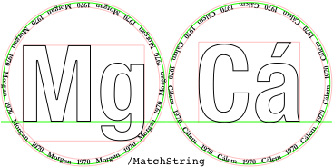

| Main index | Placemat: main guide | About author |

Julian D. A. Wiseman
Contents: Publication history; Introduction; VerticalMiddling…; FillPrioritiseSmallFileSizeOverPortability; EmptyGlassesPageAtStart; GlassesAnnotations; GlassesPageWhiteCirclesBehind.
Publication history: only here. Usual disclaimer and copyright terms apply.
There are some parameters that, in practice, would (or should) never be changed by non-expert users of the the placemat program. To avoid excessive cluttering of the main guide, these are described here.
/MatchNone  |
/MatchRow  |
/MatchString  |
◊ The parameters VerticalMiddling… control the vertical alignment of the Titles, and when OverlapSubtitlesOnTitles is true, of Subtitles. Older versions of this code centred separately each title (and also each overlapped subtitle). This is now done by setting VerticalMiddlingTitles to /MatchNone (see diagram on right, baselines being shown in green, bounding boxes in orange-pink). Alternatively the baselines (pedantically: as a proportion of the relevant font size) can be jointly computed with those of some other Titles (/MatchRow, /MatchPage, /MatchAll), or set to a fixed string (VerticalMiddlingStringTitles, defaulting to the port-friendly 4-free 5-free descender-free “08W31T67G92F”). Particularly if there are descenders or accents (especially upper-case accents as might happen in a Burgundy tasting including Échezeaux or Épineuil), it is worth setting VerticalMiddling to a value other than /MatchNone.
There is an over-ride: if a element of Titles ‘equals’ (looking inside arrays) any element of VerticalMiddlingTitlesAlwaysMatchNone, then it is treated as /MatchNone. And likewise Overtitles and VerticalMiddlingOvertitlesAlwaysMatchNone. By default these comprise the non-text symbols (+), (++), (+++), (*), /multiply=“×”, /bullet=“•”, /periodcentered=“·”, /lozenge=“◊”, /dagger=“†”, /daggerdbl=“‡”, /spade=“♠”, /heart=“♥”, /diamond=“♦”, /club=“♣”.
There is also the technical and usually irrelevant parameter VerticalMiddlingIncludeBaselineTitles. When computing the middle for a string or collection of strings, it computes the highest of the tops, and lowest of the the bottoms. If these fail to straddle zero, as would happen if a Title/Subtitle were (-), and VerticalMiddlingIncludeBaselineTitles is true, then the nearer boundary is deemed moved to the baseline.
◊ Similar parameters control the vertical placement of overlapped Overtitles: VerticalMiddlingOvertitles, VerticalMiddlingStringOvertitles, and VerticalMiddlingIncludeBaselineOvertitles.
If, a placemat using Filltexts does not print well on a machine other than the one on which it was distilled, try setting FillPrioritiseSmallFileSizeOverPortability to false. This causes the Filltexts to be replaced with their paths, stripped of font information.
Placemats have been drafted. Some images have been uploaded, which for this author typically means the one person’s glasses pages (to show the wines), and also the first voting page (to show the people). A phpbb post has been made, perhaps containing [img]…_g0.png[/img] [img]…_g1.png[/img] [img]…_v0.png[/img]. That makes it easier for others to check that things are correct. So far, so good.
Then some bottles drop out, perhaps because some people have. It happens. There is no longer a second glasses page; there is no meaning to a …_g1.png. One possibility would be to remove references to the …_g1.png image by editing every post. But if some people have quoted the images, a non-admin won’t be able to remove all references. So instead …_g1.png needs to be emptied of content.
Temporarily, /EmptyGlassesPageAtStart true def. Re-distill, after which the PDF’s first page resembles that on the left. (If the tasting’s language is not English, change EmptyPageString). Make an image from this page; name the image …_g1.png; upload the image (but not the PDF). Then revert EmptyGlassesPageAtStart to false, with which the printed PDF should be generated.
So EmptyGlassesPageAtStart should be true only ‘temporarily’ (to make an image file), never ‘permanently’ (because not to make the PDF used for printing and so not kept as part of the record of the tasting).
The ‘empty’ page is of size PaperType like the glasses pages, but of orientation EmptyGlassesPageOrientation.
Placemats have been made and printed and used. During the tasting, an error is noticed! There are two obvious desiderata: not to change the printed PDF (as the PDF, errors and all, is part of the record of the evening). But also, not to leave this error lying around to cause confusion to future generations. E.g., placemats made by this author for a tasting on 30th April 2014 mistakenly included “D78”, even though Dow did not declare the full blend in 1978, instead declaring DB78, being Dow Quinta do Bomfim. We don’t want future generations erroneously believing that we drank Dow 1978, because we didn’t. So the “D78”s have been annotated to add a comment. This is done with GlassesAnnotations, an array of even length, alternating WithinTitles-style integers pointing into the arrays such as Titles, and compound-string annotations.
This feature could be used to annotate blind tastings, after the event, to label what was what.
The existence of this feature is not unanimously regarded as a good thing: see discussion that started on 28th March 2015.
Sometimes part of the output is converted to a bitmap, for inclusion in a web page or a phpBB post. If the bitmap is to have transparency, it might be that a white background is wanted behind each of the circles. /GlassesPageWhiteCirclesBehind true def adds white circles behind.
| Main index | Top | About author |